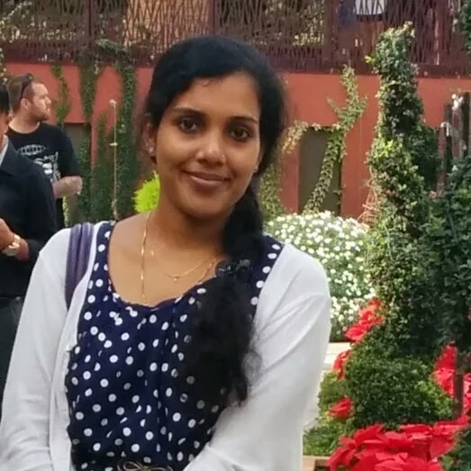

|  | Ph.D. Candidate |
I am a Ph.D. candidate from the Polymer Processing Lab in the Department of Materials Engineering at the Indian Institute of Science, Bangalore. I work on understanding viscoelastic phase separation in polymer blend in the presence of carbon nanotubes, under the supervision of Dr. Suryasarathi Bose. My research interests include developing multiphase polymer micro structures by thermally induced phase separation and in understanding their structure-property correlations using various characterization techniques, such as Rheology, Differential Scanning Calorimetry, Dielectric Spectroscopy and Atomic Force Microscopy.
Here are my resume, and Google scholar citation.
My research project includes
Viscoelastic phase separation in polymer blend in the presence of carbon nanotubes
Effect of shape of nanoparticles in the demixing of polymer blends
Tailoring macromolecules by living polymerization techniques like ATRP and RAFT polymerization
Developing porous structures by phase separation and electrospinning method for water purification membranes
Using phase separation as a tool to pattern nanoparticles in developing EMI shielding materials
P Xavier, Suryasarathi Bose, “Multiwall Carbon Nanotubes Induced Miscibility In Near Critical PS/PVME Blends: Assessing Through Concentration Fluctuation And Segmental Relaxation”, J Phys Chem B, 2013, 117, 8633.
P Xavier, K Sharma, E Kolanthai, K Vasu, A Sood, Suryasarathi Bose, “Reduced graphene oxide induced phase miscibility in polystyrene/poly(vinyl methyl ether) blends”, RSC Advances 2014, 24, 12376.
P Xavier, Suryasarathi Bose, “Non-equilibrium segmental dynamics driven by multiwall carbon nanotubes in PS/PVME blends”, Phys. Chem. Chem. Phys 2014, 16 (20), 9309 - 9316.
P Xavier, Avanish Bharati, Giridhar Madras, Suryasarathi Bose “Unusual demixing behavior in PSPVME blends in presence of nanoparticles”, Phys. Chem. Chem. Phys., 2014/, 16, 21300-21309.
P Xavier, Suryasarathi Bose, “Electromagnetic shielding materials and coatings derived from gelation of multiwall carbon nanotubes in an LCST mixture”, RSC Adv., 2014, 4, 55341-55348.
G P Kar * , P Xavier * , Suryasarathi Bose “Polymer-grafted-multiwall carbon nanotubes functionalized by nitrene chemistry: effect on cooperativity and phase miscibility”, Phys. Chem. Chem. Phys., 2014, 16, 17811-17821.
A. Bharati * , P. Xavier * , G.P. Kar, G. Madras, Suryasarathi Bose, “Nanoparticle Driven Intermolecular Cooperativity and Miscibility in Polystyrene/Poly(vinyl methyl ether) Blends”, J. Phys. Chem. B, 2014, 118, 2214.
G P Kar, A Bharati, P Xavier, Giridhar Madras, Suryasarathi Bose “The key role of polymer grafted nanoparticles in the phase miscibility of an LCST mixture”, Phys. Chem. Chem. Phys., 2015, 17, 868-877.
* these authors contributed equally to this work
P Xavier, S Bose, “Multiwall carbon nanotubes induced miscibility in PS/PVME blends”, Rangotsav, Advances in polymers and Coatings, ICT , Mumbai, February 15-16, 2013
A Bharati, P Xavier, G Madras, S Bose, “Effect of silver nanoparticles on phase seapartion and segmental dynamics of PS/PVME blends”, Rangotsav, Advances in polymers and Coatings, ICT , Mumbai, February 15-16, 2013
P Xavier, S Bose, “Multiwall carbon nanotubes induced miscibility in PS/PVME blends”, International Workshop on Advanced Materials-13, Ras Al Khaima, UAE, February 24-26, 2013
P Xavier, G P Kar, S Bose, “Effect of multiwall carbon nanotubes on the segmental motions and phase separation behavior of near critical PS/PVME blends”, FAPS-Macro, Bangalore, May 15-18, 2013
A Bharati, P Xavier, G Madras, S Bose, Effect of silver nanoparticles on phase separtion and segmental dynamics of PS/PVME blends”, FAPS-Macro, Bangalore, May 15-18 2013
P Xavier, S Bose, “Rheology as a tool to assess the effect of Multiwall carbon nanotubes (MWNTs) in the demixing of PS/PVME poly(vinyl methyl ether) ”, ICPAM, Kottayam, October 11-13, 2013
P Xavier, S Bose,“ Concentration Fluctuation and Segmental Relaxation studies in PS/PVME (vinyl methyl ether) blends with nanoparticles”, PPS, Mumbai, December 4-7, 2013
P Xavier, S Bose, “Confinement effects of MWNTs on the chain dyanamics in dynamically asymmetric polymer blend PS/PVME”, ACS National meeting and exposition, San Francisco, August 10-14, 2014